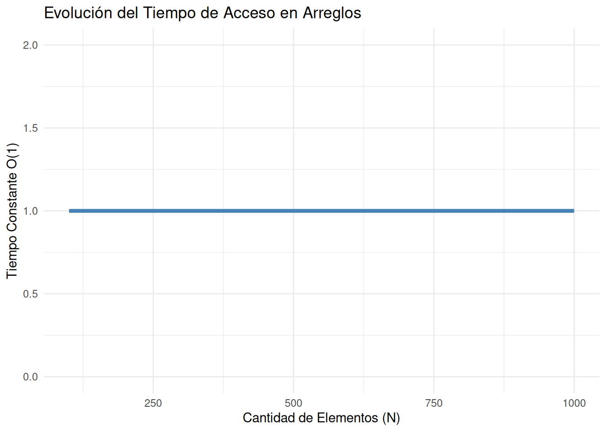

# Cargamos las librerías necesarias para las visualizaciones
library(tidyverse)
library(ggplot2)2 Capítulo 1: Estructuras Estáticas
2.1 Introducción
Imagina que tienes un album del mundial con un numero fijo de paginas. Sabes exactamente cuántas paginas tiene y cuantos cromos va en cada una. No puedes hacer el albumn mas grande sin esperar a que salga la nueva edicion, pero a cambio, encontrar un un cromo especifico para su seleccion por que conoces en que seleccion va. Así es exactamente como funcionan las estructuras de datos estáticas en memoria.
En este capítulo vamos a conocer dos estructuras súper importantes que funcionan de esta manera: los Arreglos (los datos que se guardan directamente en memoria) y los Archivos (la información que se almacena en el disco). Aunque normalmente usarás Java o Python para trabajar con ellos, entender cómo funcionan “por debajo” te ayudará a programar código mucho más rápido, ordenado y eficiente, casi como saber exactamente en qué página de tu álbum está cada cromo sin perder tiempo buscando.
TipDefinición de Arreglo
Un arreglo es como una página del álbum del Mundial donde todos los espacios para cromos ya vienen organizados desde el inicio. Cada casilla tiene una posición exacta y solo puede guardar un tipo específico de dato, igual que una página dedicada únicamente a jugadores de una misma selección. La gran ventaja de los arreglos es que permiten encontrar cualquier cromo súper rápido, porque la computadora sabe exactamente en qué posición está guardado, sin necesidad de buscar por todo el álbum. Sin embargo, su tamaño es fijo, así que si se llena la página y quieres agregar más cromos, no puedes simplemente crear nuevos espacios; tendrías que conseguir otra página más grande y mover todo nuevamente.
TipDefinición de Archivo
Un archivo es como guardar los mejores momentos de una partida o una colección completa de cromos del Mundial para poder volver a verla después, incluso cuando el programa ya se cerró. A diferencia de los arreglos, que viven temporalmente en memoria RAM, los archivos permiten almacenar información de forma permanente en el disco duro. Dentro de ellos se pueden guardar datos como nombres de jugadores, resultados de partidos o estadísticas, organizados línea por línea, igual que un historial de jugadas o un álbum digital que permanece intacto aunque apagues la computadora.
A continuación, se observan ejemplos de cómo crear este tipo de estructuras en Java y Python, además de su consumo de memoria al momento de declarar cada tipo de estructura:
En Java, la memoria Heap funciona como el lugar donde se guardan temporalmente los arreglos y archivos mientras el programa está en ejecución. Los arreglos reservan espacios consecutivos en memoria para acceder rápidamente a los datos, mientras que objetos como FileWriter permiten guardar información permanentemente en el disco. Cuando esos objetos ya no se utilizan, el Garbage Collector libera automáticamente el espacio para evitar que la memoria se llene (Deitel y Deitel 2020; Data Structure 3D Lab 2025).
// EJEMPLO DE ARREGLO EN JAVA
public class EjemploArreglo {
public static void main(String[] args) {
// Arreglo con cromos del álbum
String[] cromos = {
"Messi",
"Mbappé",
"Vinicius",
"Bellingham",
"Haaland"
};
// Acceso directo a un elemento
System.out.println("Cromo en la posición 2: " + cromos[2]);
// Recorrer el arreglo
for (int i = 0; i < cromos.length; i++) {
System.out.println("Posición " + i + ": " + cromos[i]);
}
}
}// EJEMPLO DE ARCHIVO EN JAVA
import java.io.FileWriter;
import java.io.IOException;
public class EjemploArchivo {
public static void main(String[] args) {
try {
FileWriter archivo = new FileWriter("cromos.txt");
archivo.write("Messi\n");
archivo.write("Mbappé\n");
archivo.write("Vinicius\n");
archivo.close();
System.out.println("Archivo creado correctamente.");
} catch (IOException e) {
System.out.println("Ocurrió un error.");
}
}
}En Python, la memoria Heap también funciona como el espacio donde se almacenan los arreglos, cadenas y archivos mientras el programa está ejecutándose. Cuando creamos listas o abrimos archivos, Python guarda esos objetos dinámicamente en memoria para poder acceder a ellos rápidamente. A diferencia de otros lenguajes, Python administra la memoria de forma automática, utilizando un recolector de basura (Garbage Collector) que elimina los objetos que ya no se usan, evitando así que la memoria se llene innecesariamente (Python Software Foundation 2024; Data Structure 3D Lab 2025).
# EJEMPLO DE ARREGLO EN PYTHON
# Lista de cromos del álbum
cromos = [
"Messi",
"Mbappé",
"Vinicius",
"Bellingham",
"Haaland"
]
# Acceso directo a un elemento
print("Cromo en la posición 2:", cromos[2])
# Recorrer la lista
for i in range(len(cromos)):
print("Posición", i, ":", cromos[i])# EJEMPLO DE ARCHIVO EN PYTHON
# Crear archivo de texto
archivo = open("cromos.txt", "w")
archivo.write("Messi\n")
archivo.write("Mbappé\n")
archivo.write("Vinicius\n")
archivo.close()
print("Archivo creado correctamente")2.2 Arreglos: La Caja de Herramientas Estática
Un arreglo es una colección contigua de cromos de la misma Seleccion. Su tamaño se define en el momento de la creación y, por naturaleza, no resorte cambios dinámicos.
2.2.1 La Memoria como un Gran Casillero
Pensemos en la RAM como un edificio lleno de casilleros numerados secuencialmente.
Ilustración en Java de la declaración de un arreglo
int[] calificaciones = new int[5];Cuando creas ese arreglo en Java, es como cuando compras un paquete nuevo de hojas para tu álbum del mundial: el sistema separa espacios seguidos para guardar tus cromos, uno al lado del otro. Por ejemplo, si el primer cromo empieza en la posición “1000”, el siguiente estaría en “1004”, luego “1008” y así sucesivamente, porque cada espacio ocupa el mismo tamaño.
Esa organización seguida es lo que hace que encontrar cromos sea súper rápido. Es como abrir tu álbum y saber exactamente en qué página está el cromo de una selección sin tener que buscar por todo el álbum. No importa si tienes pocos o muchísimos cromos, el tiempo para encontrarlos prácticamente siempre será el mismo.
tamanios <- seq(100, 1000, by=100)
tiempo_acceso <- rep(1, length(tamanios)) # Tiempo constante O(1) simulado
ggplot(data.frame(tamanios, tiempo_acceso), aes(x = tamanios, y = tiempo_acceso)) +
geom_line(color = "steelblue", linewidth = 1.5) +
theme_minimal() +
labs(title = "Evolución del Tiempo de Acceso en Arreglos",
x = "Cantidad de Elementos (N)",
y = "Tiempo Constante O(1)") +
ylim(0, 2)
Como observamos en la Figura 2.1, buscar el elemento 500 toma idéntico esfuerzo que buscar el primer elemento. La máquina simplemente ejecuta un cálculo matemático de salto: Dirección Base + (Índice × Tamaño del Tipo).
2.2.2 Inserciones y Eliminaciones
Imagínate que tienes una fila de autos en el campo de Mannfield, cada uno estacionado perfectamente desde la portería hasta el boost grande naranja. El coach sabe exactamente en qué posición está el Octane, el Fennec y el Breakout, los ubica al instante sin problema. Todo ordenado, como una rotación perfecta.
Pero de repente llega un Dominus nuevo y el coach decide meterlo justo entre el Octane y el Fennec. El problema es que el Fennec no puede simplemente aparecer en otro lado, tiene que retroceder un lugar, empujando al Breakout, que empuja al siguiente auto, y así hasta el fondo del campo. Todos moviéndose uno por uno como cuando en un partido te chocan en cadena contra la pared.
Y ahí está el problema: si en vez de 5 autos tienes 50 repartidos por toda la arena, meter uno nuevo al principio significa que los 50 tienen que correrse. Es como intentar reorganizar toda la rotación del equipo en pleno overtime, lento y caótico. Por eso más adelante se buscan estructuras más flexibles, como si cada auto pudiera simplemente saltar a cualquier parte del campo sin arrastrar a nadie más.
TipDefinición Tecnica
La inserción y eliminación en arreglos (arrays) consiste en agregar o quitar elementos dentro de una estructura ordenada de memoria. El problema principal es que, cuando se inserta o elimina un elemento en una posición intermedia o al inicio, los demás elementos deben desplazarse para mantener el orden, lo que genera un costo de tiempo lineal O(n).
Ejemplos en Java, Javascrip y Python
# Ejemplo en Python de inserciones
autos = ["Octane", "Fennec", "Breakout"]
autos.insert(1, "Dominus") # Todos se corren un lugar
print(autos) # ["Octane", "Dominus", "Fennec", "Breakout"]# Ejemplo en Java de eliminación
List<String> autos = new ArrayList<>(Arrays.asList("Octane", "Fennec", "Breakout"));
autos.add(1, "Dominus");
autos.remove("Fennec"); # Ejemplo en Javascrip de inserciones
const autos = ["Octane", "Fennec", "Breakout"];
autos.splice(1, 0, "Dominus");
console.log(autos); 2.3 Archivos: Persistencia mas allá del Partido
Los Archivos son como los replays de Rocket League: cuando cierras el juego todo lo que pasó en RAM desaparece, pero el replay queda guardado en tu disco para siempre, como una larga grabación de cada boost consumido, cada gol y cada derrota apilados uno tras otro. Eso es exactamente lo que hace este código, abrir un archivo y escribir jugada por jugada de forma permanente:
# Ejemplo ilusitrativo de cómo en Python el arreglo persistente
with open("datos.txt", "w") as archivo:
replay.write("Gol de Octane al minuto 2:34...")
replay.write("Boost naranja tomado por Fennec...")
replay.write("Derrota de 0-3...")El problema es que escribir en ese archivo es muchísimo más lento que simplemente recordar lo que acabas de jugar, porque acceder al disco siempre tiene su penalización. Por eso los sistemas inteligentes no mandan cada jugada al disco una por una, sino que las acumulan todas en memoria y las escriben de un solo jalón, como esperar el momento exacto para rematar en vez de tirar a gol cada vez que tocas la bola.
TipDefinición Tecnica
La persistencia de datos es la capacidad de un sistema para almacenar información de manera permanente en medios externos como archivos o bases de datos. A diferencia de la memoria RAM, los datos persistentes permanecen disponibles incluso después de cerrar el programa o apagar el equipo.
Este proceso permite conservar registros, configuraciones o información importante para su uso futuro. Sin embargo, las operaciones de lectura y escritura suelen ser más lentas que el acceso a memoria principal, ya que dependen del almacenamiento físico del sistema.
Ahora presentare dos ejemplos de persintencias realizados en Java y Javascrip:
# Ejemplo en Java
FileWriter replay = new FileWriter("datos.txt");
replay.write("Salvada épica de Breakout en la línea de gol...");
replay.write("Choque aéreo fallido por Fennec...");
replay.write("Victoria en tiempo extra 2-1...");
replay.close();# Ejemplo Javascrip
const fs = require("fs");
fs.writeFileSync("datos.txt",
"Dominus roba boost grande a los 4:12...\n" +
"Octane anota de techo con supersónico...\n" +
"Remontada épica de 0-2 a 3-2..."
);2.4 Matrices y Arreglos Multidimensionales
Para entender porque un arreglo multidimensional va un paso más allá que un arreglo unidimensional, podemos imaginar que un vector (Arreglo unidimensional) es una fila de cromos pegados uno tras otro, mientras que una matriz (Arreglo multidimensional) vendría a ser como una página completa del album del mundial, en la cual los cromos van pegados en sus respectivas filas y columnas.
Hay que tener en cuenta que la memoria RAM de una computadora no contiene una cuadrícula 2D física, lo que significa que debemos representar una página completa del album como una fila de infinta de cromos pegados uno tras otro, así se puede lograr que la computadora se engañe así misma para que por consiguiente se guarde en memoria.
# Ejemplo en Python
matriz = [
[1, 2, 3],
[4, 5, 6],
[7, 8, 9]
]
print(matriz[1][2]) # → 6
fila, col, num_cols = 1, 2, 3
indice_real = fila * num_cols + col
print(indice_real)2.4.1 Mapeo de 2D a Memoria Lineal
¿Cómo mete la computadora una página del album en una fila de memoria? Para ello esta utiliza un truco llamado Row-Major Order (orden por filas).
Imaginemos que se despegan los cromos de una de las páginas del album, pero en un orden estricto, primero se pega toda la fila 1, depues se pega la fila 2, y al final la fila 3. Para encontrar rapidamente al jugador que está en la Fila i y Columna i, la computadora evita buscar página por página, y para esto se necesita la siguiente fórmula:
\(Posición = DirecciónBase + (i \times N + j) \times TamañoDelDato\)
Para explicar esta fórmula, imaginemos que \(N\) es el número total de columnas, o sea cuántos cromos caben por fila, si se busca al primer jugador de la segunda fila \((i=1)\), se saltan todos los cromos de la primera fila \((1xN)\) y luego se mueve j espacios para así llegar al jugador que se busca.
EJEMPLO EN JAVA
// Ejemplo en Java usando listas por comprensión para simular
// una matriz (comportamiento 2D) de 3x3 inicializada en 0:
int[][] paginaAlbum = new int[3][3];
paginaAlbum[1][2] = 5;
System.out.println("El cromo en la posición [1][2] es el número: " + paginaAlbum[1][2]);2.5 Cadenas de Caracteres (Strings)
La cadena de caracteres es como el álbum del Mundial de Fútbol: cada página es una cadena de texto, un arreglo fijo de huecos para stickers de jugadores como “Messi” o “Mbappé”. En lenguajes como Java o Python, estas cadenas son objetos inmutables, como un álbum plastificado que no puedes mover ni borrar stickers una vez pegados; Internamente usan un arreglo estático de caracteres terminados por un marcador invisible (\0), para saber dónde acaba.
La declaracion de cadenas de caracteres suele variar un poco, pero en si, la sintaxis es la misma, por ejemplo:
// EJEMPLO DE CADENA DE CARACTERES EN JAVA
public class EjemploCadena {
public static void main(String[] args) {
// Cadena con nombres de jugadores
String jugador = "Messi";
// Mostrar la cadena completa
System.out.println("Jugador favorito: " + jugador);
// Acceder a un carácter específico
System.out.println("Primera letra: " + jugador.charAt(0));
// Longitud de la cadena
System.out.println("Cantidad de letras: " + jugador.length());
}
}# EJEMPLO DE CADENA DE CARACTERES EN PYTHON
# Cadena con nombre de jugador
jugador = "Mbappé"
# Mostrar la cadena completa
print("Jugador favorito:", jugador)
# Acceder a un carácter específico
print("Primera letra:", jugador[0])
# Longitud de la cadena
print("Cantidad de letras:", len(jugador))La Trampa del Rendimiento (Eficiencia \(\mathcal{O}(N^2)\))
El problema surge cuando quieres “agregar” una figurita. Como el álbum no cambia, la computadora se ve obligada a comprar un álbum nuevo más grande, copiar todas las figuritas que ya tenías y recién ahí pegar la nueva. Si haces esto figurita por figurita, el proceso se vuelve lentísimo y pesado (O(N^2)); por eso, para pegar miles de fotos, es mejor usar un StringBuilder, que funciona como una carpeta de ganchos donde agregas hojas sin tener que desechar todo el álbum cada vez.
2.5.1 Autoevaluación
- Reflexion Crítica: Las estructuras estáticas demostraron ser fundamentales para comprender cómo la computadora organiza la memoria y accede rápidamente a la información, de manera similar a un álbum del Mundial donde cada cromo tiene una posición exacta. A lo largo del proyecto se observó que arreglos, matrices, cadenas de caracteres y archivos permiten trabajar con datos de forma eficiente cuando el tamaño ya está definido, logrando accesos rápidos y un uso ordenado de la memoria Heap. Sin embargo, también quedó claro que esta rigidez puede convertirse en una limitación cuando los datos cambian constantemente, ya que insertar o eliminar elementos implica mover información completa, como reorganizar todos los cromos de una página. Además, el análisis de archivos permitió comprender la diferencia entre almacenamiento temporal en RAM y persistencia permanente en disco, mientras que conceptos como Garbage Collector mostraron cómo lenguajes como Java y Python administran automáticamente la memoria. En conjunto, el proyecto permitió entender no solo cómo funcionan las estructuras estáticas a nivel técnico, sino también por qué son la base para desarrollar sistemas más complejos y eficientes en programación.
2.6 Resolución de Problemas
2.6.1 Reto: Sistema de Álbum del Mundial
Crea un programa en Java que simule un álbum del Mundial usando arreglos estáticos.
El programa debe permitir lo siguiente:
- Registrar hasta 20 cromos de jugadores.
- Mostrar todos los cromos guardados.
- Buscar un jugador específico.
- Contar cuántos espacios del álbum siguen vacíos.
- Reemplazar un cromo repetido por otro jugador.
2.6.2 Reglas del desafío
- Usa únicamente arreglos estáticos (
String[]). - No se permite usar
ArrayList. - El tamaño del arreglo debe ser fijo.
- Los espacios vacíos deben mostrarse como
"VACÍO".
2.6.3 Operaciones opcionales para el desafío
Agregar un menú interactivo con lo siguiente (usar Scanner):
- Agregar cromo.
- Mostrar álbum.
- Buscar jugador.
- Reemplazar cromo.
- Salir.